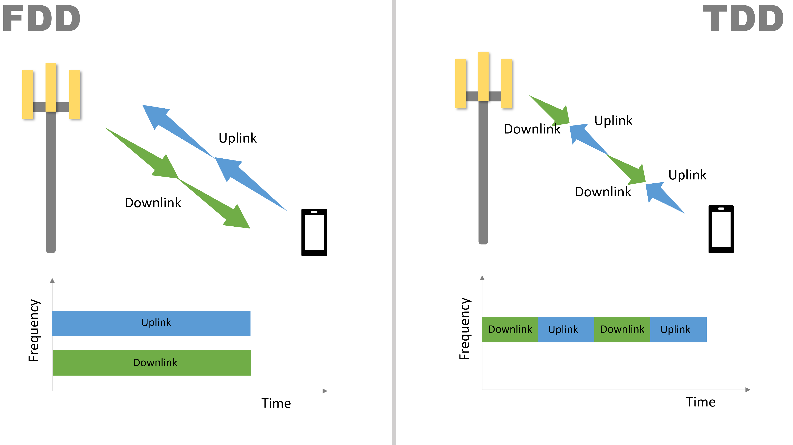

duplex mode
- simultaneous bi directional link transmissions:
- FDD - frequency division duplexing
- TDD - Time division duplexing
FDD
- seperate UP/DL in frequency domain
- no support for asymmetric traffic
- Lte/ umts / gsm / is-95 / amps
TDD
- seperate UP/DL in time domain
- UL+DL on single band
- support for asymmetric traffic
- DECT/LTE/UMTS
